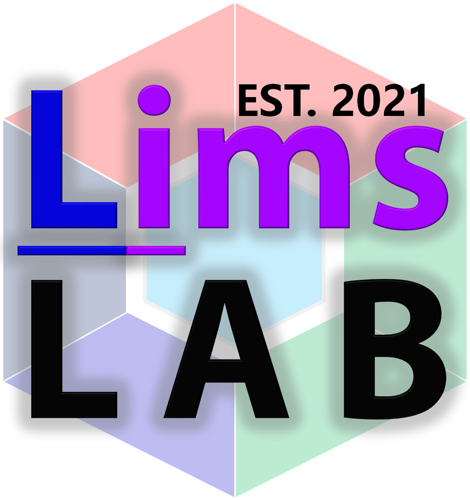
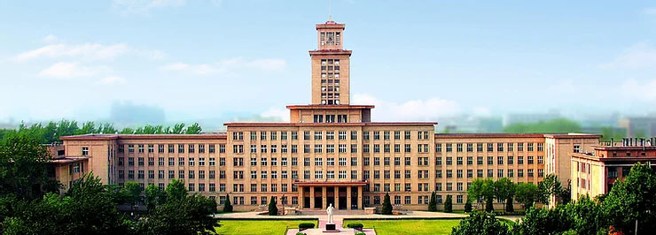
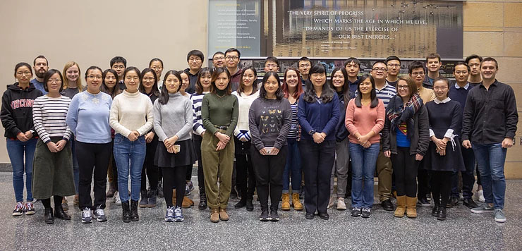

LimsLab Group Site Gets Online!
We are SO excited to share this unique research group (LimsLab @ NKU) site to the whole world. The LimsLab group site has been officially released on Oct 2nd, 2020. Hello, World! Hello, LimsLab!
Native Structural Mass Spectrometry
by Graham Delafield @ Prof. Lingjun Li Lab, UW-Madison
September 18, 2020
Looking back on his time in the Li Research Group, postdoctoral fellow Dr. Gongyu Li believes his time spent in Madison was fundamental to his growth towards academic faculty. Now beginning his fourth year of fellowship research, Gongyu has already produced an impressive body of work in the fields of ion mobility mass spectrometry (IM-MS), on-tissue mass spectrometry, and targeted proteomics. While his scientific acumen has been recognized by numerous organizations during his time at UW-Madison, his latest achievement may dwarf them all. Dr. Gongyu Li was offered, and has since accepted, a full-time faculty position at Nankai University, one of the premier Chinese institutions in the field of chemistry!
While we are elated for this monumentous achievement, we are already feeling the sadness of his departure. Naturally, we took the opportunity to ask Gongyu some questions about this new journey. Remembering his journey to this point Gongyu reflected on his time at UW-Madison and offers some advice to new researchers who are seeking are beginnig their own path towards academia.
Dr. Gongyu Li obtained his Ph.D. degree in Analytical Chemistry under the supervision of Dr. Guangming Huang at University of Science and Technology of China (USTC) in June 2017. His research career started at Jiangxi Normal University (JXNU), where he received his B.S. in Chemistry in 2012. In 2016 and 2019, he visited Dr. Brandon T. Ruotolo’s lab at University of Michigan as a visiting graduate student and visiting scholar, respectively, where he started and extended his ion mobility spectrometry research. Currently, Dr. Gongyu Li is appointed as a Postdoctoral Research Associate at UW-Madison working on ion mobility- and laser-based MS methodologies for the rapid structural analysis of native proteins as a part of his long-term academic career goal.
Gongyu came to the Li Research Group at UW-Madison due to the open-minded and unbiased-supported research team with diverse background and significant standing in the research community. Knowing he wanted to pursue instrumental applications, the well-funded and highly-resourced Li Research Group was a perfect fit for him. During his fellowship, Gongyu's research was highlighted by publications in Analytical Chemistry and Nature (not once, but twice!)
Gongyu accepted a TTAP faculty position from Nankai University (NKU or Nankai, http://en.nankai.edu.cn/). A key multidisciplinary and research-oriented university directly under the jurisdiction of the Ministry of Education, Nankai University, is located in Tianjin on the coast of the sea of Bohai. Founded in 1919, Nankai has long been recognized as one of the most prestigious universities in China. NKU is especially well known for its economics, history, chemistry and mathematician researches and studies. The research produced within the department of chemistry is consistently ranked among top 5 lists of Chinese Universities and was ranked No. 1 according to statistics from the Ministry of Education in 2008. (Not a bad, gig, huh?)
Gongyu's plan is to start up another "Li Research Group" - LimsLab - indicating the emphasis on MS research (Li-MS-Lab) and ion mobility spectrometry (Li-IMS-Lab). His research will focus on providing molecular basis and next-generation therapeutics for human disease. Of note, his group will pursue ultrafast-separation/MS-based in situ identification and rapid structural elucidation of human disease-linked bioactive molecules. The future LimsLab will integrate the individual benefits of 1) Ion Mobility-Mass Spectrometry, 2) In Situ Mass Spectrometry and 3) Targeted Proteomics, with specific interests in tackling technical issues such as offline identification, inadequate structural resolution and phase transition structural disruption.
When asked how his time in the Li Research Group benefited his budding career, Gongyu said, "My PhD research was focusing on in situ MS and my visiting research focused on IM-MS. The three years I have spent in the Li Research Group at UW-Madison have prepared me both technically and spiritually to pursue my own research goals. I was able to publish two important Nature Communications publications in 2019 and attended multiple international conferences with oral and poster presentations. I was fortunate to interact and communicate with a wide range of research pioneers with diverse research backgrounds. These academic and personal activities significantly improved my understanding of academic research and communication. And I realize none of this would have been possible if not for the continuous support of Dr. Lingjun Li."
When asked for the advice he would give young researchers--especially those looking to go into academia, Gongyu listed four specific items: "1) Get solid data published as soon as you can, but stay hungry when you experience setbacks or receive unexpected preliminary data. 2) Try your best to make your research unique and then make it unique enough in your community (e.g. IM-MS). 3) All nice ideas come from reading - please keep comb the literature every day and anticipate collecting over 10,000 references in your library by the time you are ready to attend your thesis defense. 4) Check out how much raw data you have periodically (or at least annually). Make a bar chart to show your productivity over time since your first year as a fresh PhD student. You will be surprised how much you have grown."
The entire Li Research Group will be sad to see Gongyu leave. (We also think he will be sad to leave us..) But Gongyu and the new Li Lab - "LimsLab @ NKU" - welcomes you and anyone who is interested in human disease protein studies via native structural mass spectrometry (including ion mobility, in situ MS and targeted proteomics). Please contact Dr. Gongyu Li (ligongyu1@126.com) for more discussions and opening positions (starting Feb 2021) in LimsLab @ NKU.
We are so proud of Gongyu and we cannot wait to see all that he accomplishes!
